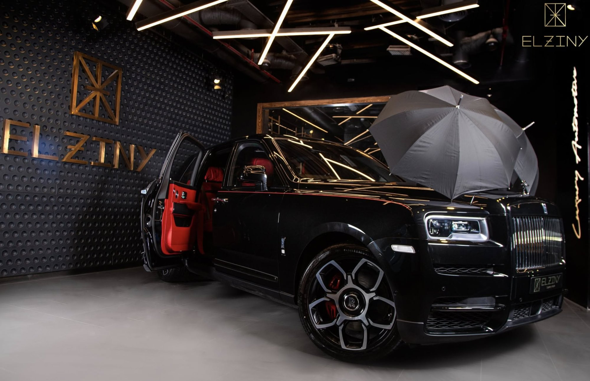
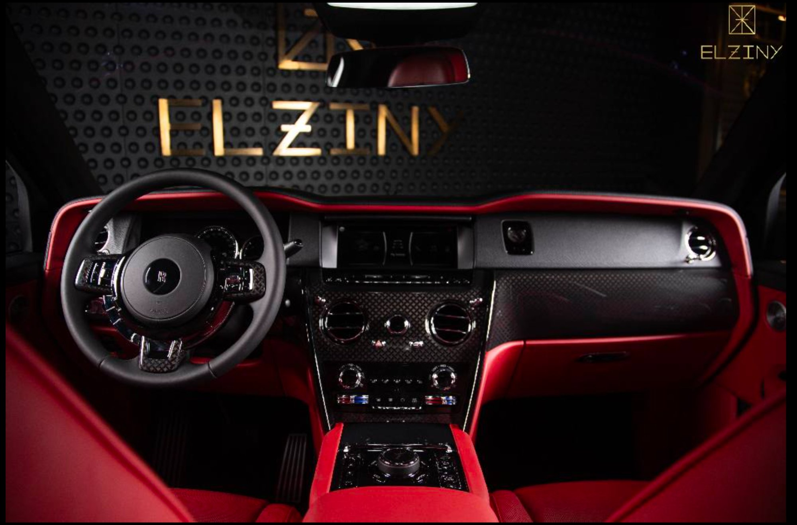
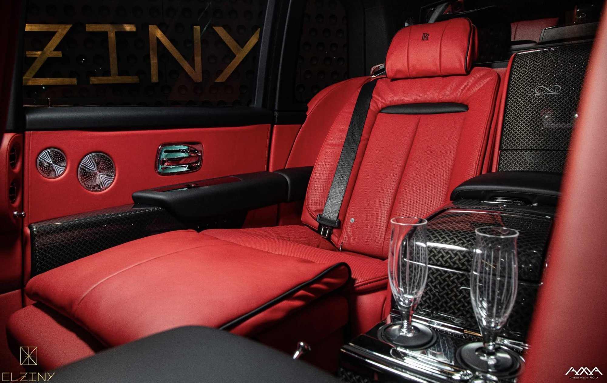

The Black Badge is Rolls-Royce at its most uncompromising. Every element of the Cullinan's already-formidable presence has been amplified — the Spirit of Ecstasy darkened, the chrome eliminated, the power increased. Beneath the obsidian exterior lies a twin-turbocharged 6.75-litre V12 producing 600 horsepower and a wave of torque so vast it renders acceleration almost surreal. Inside, a world of full crimson leather awaits — a hand-stitched sanctuary that moves at the speed of silence.

The Black Badge treatment goes beyond aesthetics. The Spirit of Ecstasy is finished in dark chrome, the grille blacked out, the wheels recast in a darker alloy. Even the engine tune is revised — sharper throttle response, a more assertive character. This is a Rolls-Royce that demands to be noticed, on its own terms.

The rear cabin of the Cullinan is unlike any other vehicle on earth. Reclining individual seats finished in hand-stitched crimson leather, crystal champagne flutes stowed in dedicated holders, and a silence so complete you forget the outside world exists. This is not transport. This is an experience measured in moments.